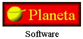

Criado dia 22 de janeiro de 2002
Modificado dia 23 de Outubro de 2002
Finalizado dia 28 de Fevereiro de 2002
POR: O PLANETA SOFTWARE (Marcos Côrtes)
NOTA: antiga O Comunista software

www.paginafacil.com/eradosdeuses/
Leia-me do jogo ERA DOS DEUSES
Primeiramente, obrigado por baixar EDD (Era dos Deuses) tenha certeza que está jogando um jogo de qualidade que lhe proporcionará horas infinitas de prazer!
Siga a ler este arquivo leia-me do jogo EDD ou clique nos links de acordo com o que você procura. Espero que este arquivo seja satisfatório para tirar suas dúvidas. Caso infelizmente não haja o que deseja, veja a sessão "contato" e comunique-se comigo.
O jogo Era Dos Deuses é um jogo de RPG para computador padrão 386 e windows9x. Ele utiliza a engine (ou comumente chamada de Maker) chamada de RPG MAKER, que nada mais é do que um programa especialmente feito para a criação de jogos deste estilo.
Em meados de setembro de 2001, eu (O Planeta ou O Comunista) e meu irmão tivemos a idéia de nos "aventurar" neste programa chamado RPG maker, pois tínhamos acabado de zerar o tão famoso "Chrono Trigger" (jogo de Super Nitendo) e estamos entusiasmados com este novo mundo chamado RPG.
Fiquei uma noite toda pensando em como fazer uma história legal e sem me influenciar pelos jogos que tinha visto (Acho que foi "A Conta" e o "Última dama de fogo" que havia jogado até o momento, além do recém zerado Chrono trigger, que eu confesso que me foi grande fonte de inspiraçao - leia-se cópia). Até que cheguei a conclusão de que seria quase impossível encontrar um tema totalmente novo. MAS QUANTO A UMA CONCLUSÃO NOVA SOBRE UM VELHO TEMA....
Entrei em um ou dois sites de astrologia/esoterismo que tinha no meu "favoritos" e cheguei a base da história: A revolução dos elementos! Uma história que contasse algo relativamente já gasto, como os elementos naturais, mas contasse o seu surgimento! Como surge um mito, uma crença, UM DEUS!
E é assim que surge a idéia inicial de EDD, a revolução dos deuses, a época em que acontece. A ERA DOS DEUSES.
Uma coisa interessante também é que na verdade se tinha como base inicial contar a história do surgimento dos deuses elementais, a animação inicial do jogo contava uma antiga profecia, e não uma versão do surgimento do mundo. Audia se chamava Trindade e era dominada por 3 deuses (apologia a trindade do cristianismo). E seriam substituídos pelos deuses elementais. O templo de Audia seria na verdade onde caiu as pedras e haveria três torres. Cada uma pra cada membro da trindade.
Porém, esta história é por demais simples e daria muito pouco tempo de jogo. Além te ter deixado vários personagens que hoje existem em EDD pro lado de fora. A saída do meu irmão do projeto e minha entrada definitiva no fórum da Casa dos Jogos fizeram-me mudar de planos. O mundo maker na época estava em apogeu, sites grandes como a JEMTEAM e a URPGM estavam no seu momento mais glorioso (pena que hoje não existam mais). As novas técnicas em RPG Maker iam surgindo. Animações em pictures, a idéia de Battle system e menus personalizados ia surgindo. Bibliotecas e recursos estavam sendo importados e surgia as primeiras idéias "além do RTP". Isso tudo (eu acho hoje isso) fez com que eu tivesse a necessidade de tornar EDD Não somente em um simples jogo teste que era, mas em algo novo e com qualidade, assim como é sua história.
E se começou a minha caçada por bibliotecas e técnicas novas. Pode ser percebido que em EDD, depois que se destrói a pedra verde, começa a aparecer novas técnicas, chips-sets, etc... pois justamente nesse nível que eu comecei a aperfeiçoar o jogo.
Veio então a crise do RPG maker de março de 2002. Os sites começaram a desmoronar. Assim como os jogos. Graças a deus EDD não sofreu tanto além do seu atraso na produção, já que discussões "políticas" a respeito de RPG maker invadiram os fóruns. Eu não iria ficar de fora, tentei lançar um site, falhei. Foi então que vi que o negócio era cair dentro do projeto de EDD e deixar o mundo maker se restabelecer.
E agora estou aqui escrevendo este texto para o site do EDD. Faltando algumas coisas para começar a distribuir EDD completo. Falta pouco. Espero que EDD atinja as minha expectativas e de todos que me ajudaram e esperam por ele!
Era dos deuses está sendo gratuitamente oferecido na área de download do site www.eradosdeuses.kit.net (além dos melhores sites de rpg maker do brasil ;-) em três alternativas para instalação:
instalaredd.exe - Se você fez download desse arquivo RAR executável para instalar o jogo Era dos deuses, optou pela instalação simplificada. Este arquivo possui cerca de 4 a 5 megas. Antes de instalá-lo, se deve verificar se no computador já está instalado a biblioteca RTP. Que é um conjunto de vários arquivos multimídias para serem usados nos jogos feitos no RPG MAKER 2000. Caso não esteja instalado em seu computador, vá ao site www.eradosdeuses.kit.net ou nos sites que serão citados abaixo para baixá-lo e instalá-lo.
instalaredd_rtp.exe - Se você fez download desse executável para instalar o jogo Era dos deuses, optou pela instalação simplificada. Porém com os arquivos do rtp inclusos. Este arquivo deve possuir um pouco mais de 8 a 10 megas. Não sendo necessário a instalação prévia da biblioteca RTP. Pois os arquivos já virão inclusos.
edd_div.RAR (mais arquivos que completam o jogo) - Se você fez download deste arquivo RAR para instalar o jogo Era dos Deuses, optou pela instalação dividida do jogo Era dos deuses. Este arquivo é compactado e dividido. possuindo cerca de 1 mega cada arquivo. Para instalá-lo, se deve depositar os arquivos numa mesma pasta e executar o arquivo edd_div.exe (dando dois cliques nele no windows explorer por exemplo) O programa pedirá a pasta onde deseja depositar os arquivos que compõe o jogo Era dos deuses (folder). Depois de descompactar, vá a pasta especificada e execute o programa edd.exe (com o símbolo ).
Se houver algum erro durante a instalação de qualquer uma forma de download, desligue o computador, espere alguns minutos, ligue-o e tente instalar era dos deuses de novo (na mesma pasta se possível), se o erro persistir, notifique rapidamente a O Planeta software através do site do era dos deuses.
Depois que jogar Era dos Deuses e quiser retirá-lo de sua máquina, somente é preciso deletar a pasta em que foi instalado.
4- Como comunicar bugs durante o jogo?
O jogo Era dos Deuses foi testado gentilmente pelo Beta-test EmALou. Que notificou uma série de bugs que comprometeriam o jogo. Outro amigo, Pablo, me mandou também recentemente alguns bugs que haviam. Além de uma série de jogadores que já me mandaram bugs que foram resolvidos.
Porém, qualquer programa é passível de erro. Caso descubra bugs no jogo, comunique imediatamente a O Planeta Software através do site www.eradosdeuses.kit.net ou direto pelo e-mail tecarioca@ig.com.br
A história de EDD se passa no que eu cheguei a conclusão de ser um "medieval evoluído". O que seria isso?
Seria, digamos, a sociedade atual se a antiga cultura feudal ou pré-renascentista da idade média tivesse reinado. Se todas as tecnologias viessem a ser descobertas mas a humanidade ainda fosse governada por reis, mitos e dogmas.
E é neste clima que Era dos Deuses Impera, uma humanidade rarefeita e dogmática, se contra-dizendo numa alta tecnologia que se mistura com Misticismo e ciência.
O jogo, apesar de apresentar várias seqüencias de humor, tem sempre o intuito de mistificar algum fato que está ocorrendo não só em relação aos personagens, mas a sociedade e a mente de todos. Há sempre uma tentativa de explicar porque tudo acontece, porque tudo existe.
Neste mundo, você entra com o nome inicial de Eddie (podendo ser mudado). Tudo começa com você lendo um livro de história. Que conta como supostamente "as pedras" vieram para a terra e lhe deram vida. Nesse instante você é chamado por um amigo. Ele lhe alerta para ir para sua casa.
Lá, você descobre que sua mãe foi presa por uma acusação falsa de bruxaria contra o rei de sua cidade- estado, Audia. E es sua missão. Salvar sua mãe!
Quando se chega ao Rei, você descobre que ele está sofrendo de uma doença. E esta foi provocada por uma "bruxaria" feita por sua mãe.
Quando finalmente chega a quem prendeu sua mae (o Bispo). Uma antiga lenda lhe é contada, "aquele que vê a luz da pedra branca será imortal". Esta "pedra branca" é um artefato de guerra que foi destruido e é guardado no castelo de Audia. Isso mesmo! É um monte de "cacos de quartzo"! E só com ela reconstruí-da se poderia supostamente usar sua força.
E é nesta antiga lenda que é baseada sua missão para com seu reino - reviver a pedra branca - para reviver o rei. Estaria realmente o bispo mais preocupado em salvar seu governante ou atrasar seu lado? Você conseguirá "reviver", reenergizar a pedra branca? E as outras pedras que lhe sao contadas no início do jogo através de livros? Onde entram na história? E os Deuses? Isso você terá de descobrir pois se contar perde a graça! ;-)
O jogo Era dos Deuses está em seu atual estado completo. Apresentando um conjunto de inovações e qualidades! Veja alguns exemplos:
O jogo apresenta o padrão de comandos de todos os jogos de RPG Maker:
Desde já, é importante salientar que, este jogo foi feito por uma pseudo-firma O Planeta Software é composta pelo Maker e programador amador Marcos Vinicius Policarpo Côrtes (eu). Venho aprendendo desde o início do ano de 2001 a dominar vários makers, passando por MFex (multimedia fusion express), linguagens como basic, pascal, html, etc... Porém me apaixonando pelo RPG maker (depois de muita luta com o meu pentium 100 Mhz, é claro). E mesmo no início que tinha "preconceitos" ao RPGM. Vejo agora a potencialidade deste maker.
Porém, nada é impossível, mas sem dúvida só se tornou possível tornar este jogo realidade através do auxílio de muitos e muitos makers que desde o início vêm me ajudando.
Em primeiro gostaria de citar a própria ASCII, por ter criado este programa maravilhoso (mesmo com os últimos abandonos ao público ocidental... mas...)
A Don Miguel, este sim é um marco na história maker mundial, ele meteu a cara e traduziu um programa japonês para o inglês, mesmo sendo, quem diria, RUSSO.
Devo lembrar que eu posso ser até um bom Maker, mas tenho um grande defeito: Odeio testar jogo. É algo que não gosto de fazer pois eu gosto de sempre está pondo idéias no papel (no rpg maker heheheh) e parar para os testes atrapalha um pouco. Além do que eu já sei o caminho correto, e o jogo não passaria pelo "elemento surpresa" como por exemplo um jogador tentando fuçar naquela ilha que num tem nenhuma importância pra história, mas pode fazer um estrago se antes o jogador pular determinado passo que deveria seguir. É por isso que para Era dos deuses uma das ajudas mais importantes foi a do Beta-test EmALou e a do Pablo, que me ajudou fazendo um teste completo, do início ao fim do jogo. Eliminando uma série de erros que não deixariam o jogador contente (nem o beta-test, que teve de mais de uma vez voltar um caminho todo por conta de um teletransporte mau feito). Valeu mesmo cara :-)
Se segue, não em ordem de importância, mas de quantidade crescente, as centenas de makers que compõe eu que já passaram pelo grande berçário maker CASA DOS JOGOS, mesmo sendo um site comercial e mais ligado ao pessoal de MFF, é hoje, ao meu ver o site que mais divulgou programas makers! Por isso o título de "berçário". Acho que não haja nenhum maker que não tenha pelo menos passado pela CDJ.
Mas o que mais se destaca nesse site é o . É ele em que se reúnem vários makers para procurar ajuda, discutir opiniões, se divertir, etc... Por isso, quando me perguntam qual grupo de produção participou na criação do jogo EDD, não hesito em falar:
ERA DOS DEUSES É UMA PRODUÇÃO DA:
Mas se nota que não se deve ficar preso em um só lugar, até mesmo por que a CDJ é um site de divulgação de jogos, não um site especificadamente MAKER, por isso existe dezenas de sites que foram acessados em busca de recursos, tuturais, etc. Seria impossível citar todos, por causa do número elevado e também por que não guardei todos. Mas se deve destacar:
urpgm.com - (Universo do rpgmaker - desativado) Este é (era) considerado por muitos a "microsoft" do RPG MAKER, o que a Casa de jogos é para a publicidade MAKER, a URPGM era para o acervo de arquivos multimídia. Tudo que se conhece hoje de organização de tuturais, arquitetura de sites, técnicas primárias e também avançadas de criação de jogos (bsys, menus, etc...) surgiu lá. A grande pena é que não resistiu a uma recente crise do RPGM, mas é um marco que não deve ser esquecido.
MU - (Maker Universe) Este é atualmente um dos sites que possuem uma comunidade maker muito experiente e atualizada. Já fui muitas e muitas vezes tirar dúvidas. Se nota pelo nome que descendente da URPGM, já que muitos makers órfãos foram para ela. (originando aí a comunidade experiente)
One Games - Site do nosso maker amigo Zoro (antigo ONE, nota-se pelo nome do site) Possui uma biblioteca de arquivos de se invejar muito site. Este é o que chamaria de "produção da CDJ fórum", Já que muitos Makers da CDJ fórum participam do site (como eu... tá legal... tá legal... faz tempo que num ajudo mais é porque fazia o EDD... ;-)]
Top Makers - Este é o site "concorrente"com a CDJ no quesito acervo de jogos, porém específico de RPGM e MUGEM (programa para fazer jogos de luta). O fórum não fica atrás, é terceira força no quesito popularidade e fica em primeiro muitas vezes no quesito experiência.
Fantazy RPGM (MRP@) - Site da nossa amiga MRP, muitos recursos inéditos existem na sua page, assim foi de bom proveito para uso em Era dos deuses.
Cabe aqui também lembrar das pessoas que tiveram saco de baixar a versão beta de EDD, pegar os bugs e me enviá-los, cada dia que recebia um e-mail, eram três de trabalho exaustivo em Era dos Deuses. Desde sempre muito grato a vocês!
Diego Oliveira Gonçalves - Juninho - Júnior - Lucas Lattari - Manuel Carlos - Reginaldo Soares - Snaycron - Tiranos - Rafael - Esdras - msv - Allan Viniciús - Seleguim - Roberto - Breno - César Kopp - Andrey - Victor - Jéssica - Ricardo - Walace
Mas sem dúvida, a pessoa que mais me ajudou a realizar essa obra foi...
VOCÊ!
POR TER ADQUIRIDO ESTE JOGO!